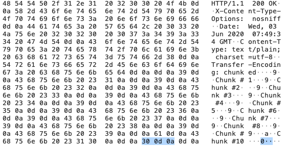

tcp粘包/分包整理
处理tcp层的逻辑的时候就需要处理粘包问题。因为tcp是基于流的，保证有序，但是流里面消息是没有边界的，tcp会对应用消息做分包，所以会有粘包/分包问题。
使用应用层的协议就不需要，例如http，websocket。这些应用层协议是基于tcp，本身解决粘包问题。
- Http
http的header有"Content-Length"这个就设置了应用消息的长度，接收方可以根据这个长度来感知应用消息的长度。
http在"Transfer-Encoding: chunked"场景下是没有Content-Length的。在头部加入 Transfer-Encoding: chunked 之后，就代表这个报文采用了分块编码。这时，报文中的实体需要改为用一系列分块来传输。每个分块包含十六进制的长度值和数据，长度值独占一行，长度不包括它结尾的 CRLF（\r\n），也不包括分块数据结尾的 CRLF。最后一个分块长度值必须为 0，对应的分块数据没有内容，表示实体结束。 例如golang以下代码：
func main() {
http.HandleFunc("/hello", ChunkServer)
http.ListenAndServe("127.0.0.1:6666", nil)
}
func ChunkServer(w http.ResponseWriter, req *http.Request) {
flusher, ok := w.(http.Flusher)
if !ok {
panic("expected http.ResponseWriter to be an http.Flusher")
}
w.Header().Set("X-Content-Type-Options", "nosniff")
for i := 1; i <= 10; i++ {
fmt.Fprintf(w, "Chunk #%d\n", i)
flusher.Flush() // Trigger "chunked" encoding and send a chunk...
time.Sleep(500 * time.Millisecond)
}
}
上面这段代码会隐性地触发golang的http chunk。 通过Wireshark抓包看到:  每次flusher.Flush都会形成一个分块，每个分块长度为9。最后一个分块为0，为消息主体的结束标识。
- Websocket
WebSocket 会把应用的消息分割成一个或多个帧，接收方接到到多个帧会进行组装，等到接收到完整消息之后再通知接收端。 WebSocket 数据帧格式如下：
0 1 2 3
0 1 2 3 4 5 6 7 8 9 0 1 2 3 4 5 6 7 8 9 0 1 2 3 4 5 6 7 8 9 0 1
+-+-+-+-+-------+-+-------------+-------------------------------+
|F|R|R|R| opcode|M| Payload len | Extended payload length |
|I|S|S|S| (4) |A| (7) | (16/64) |
|N|V|V|V| |S| | (if payload len==126/127) |
| |1|2|3| |K| | |
+-+-+-+-+-------+-+-------------+ - - - - - - - - - - - - - - - +
| Extended payload length continued, if payload len == 127 |
+ - - - - - - - - - - - - - - - +-------------------------------+
| |Masking-key, if MASK set to 1 |
+-------------------------------+-------------------------------+
| Masking-key (continued) | Payload Data |
+-------------------------------- - - - - - - - - - - - - - - - +
: Payload Data continued ... :
+ - - - - - - - - - - - - - - - - - - - - - - - - - - - - - - - +
| Payload Data continued ... |
+---------------------------------------------------------------+
字段解析如下： 1 FIN:0表示不是最后一个分片，1表示是最后一个分片。 2 RSV1, RSV2, RSV3： 3 一般情况下全为 0。当客户端、服务端协商采用 WebSocket 扩展时，这三个标志位可以非0，且值的含义由扩展进行定义。如果出现非零的值，且并没有采用 WebSocket 扩展，连接出错。 4 Opcode： %x0：表示一个延续帧。当 Opcode 为 0 时，表示本次数据传输采用了数据分片，当前收到的数据帧为其中一个数据分片； %x1：表示这是一个文本帧（text frame）； %x2：表示这是一个二进制帧（binary frame）； %x3-7：保留的操作代码，用于后续定义的非控制帧； %x8：表示连接断开； %x9：表示这是一个心跳请求（ping）； %xA：表示这是一个心跳响应（pong）； %xB-F：保留的操作代码，用于后续定义的控制帧。
可以通过FIN就能感知应用消息的边界。
- TCP
golang处理tcp粘包/分包问题，网上搜到的处理方法思路大概是：在数据包中添加长度字段。看看goim（bilibili毛剑开发的）是怎么处理的： api/comet/grpc/protocol.go的代码
func (p *Proto) ReadTCP(rr *bufio.Reader) (err error) {
var (
bodyLen int
headerLen int16
packLen int32
buf []byte
)
// 从reader中把header取出来
if buf, err = rr.Pop(_rawHeaderSize); err != nil {
return
}
// 从头部中读取包的长度、头部长度、版本等
packLen = binary.BigEndian.Int32(buf[_packOffset:_headerOffset])
headerLen = binary.BigEndian.Int16(buf[_headerOffset:_verOffset])
p.Ver = int32(binary.BigEndian.Int16(buf[_verOffset:_opOffset]))
p.Op = binary.BigEndian.Int32(buf[_opOffset:_seqOffset])
p.Seq = binary.BigEndian.Int32(buf[_seqOffset:])
if packLen > _maxPackSize {
return ErrProtoPackLen
}
if headerLen != _rawHeaderSize {
return ErrProtoHeaderLen
}
if bodyLen = int(packLen - int32(headerLen)); bodyLen > 0 {
// 从reader中读取body内容，如果reader里面没达到可以取的长度，则返回错误
p.Body, err = rr.Pop(bodyLen)
} else {
p.Body = nil
}
return
}
下面是internel/comet/serve_tcp.go的读取片段：
for {
...
if err = p.ReadTCP(rr); err != nil {
break
}
if white {
whitelist.Printf("key: %s read proto:%v\n", ch.Key, p)
}
if p.Op == grpc.OpHeartbeat {
tr.Set(trd, hb)
p.Op = grpc.OpHeartbeatReply
p.Body = nil
// NOTE: send server heartbeat for a long time
if now := time.Now(); now.Sub(lastHb) > serverHeartbeat {
if err1 := s.Heartbeat(ctx, ch.Mid, ch.Key); err1 == nil {
lastHb = now
}
}
if conf.Conf.Debug {
log.Infof("tcp heartbeat receive key:%s, mid:%d", ch.Key, ch.Mid)
}
step++
} else {
if err = s.Operate(ctx, p, ch, b); err != nil {
break
}
}
...
}